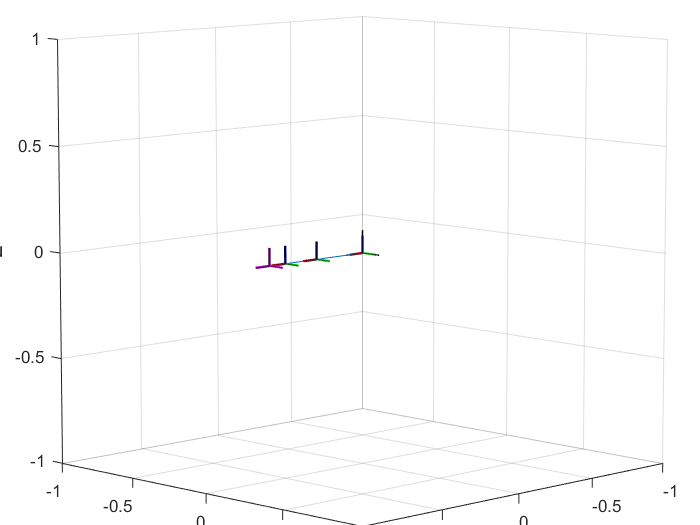
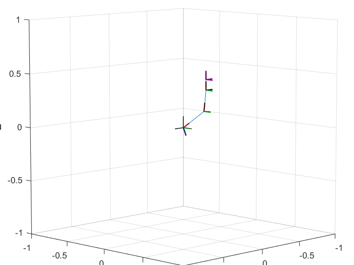
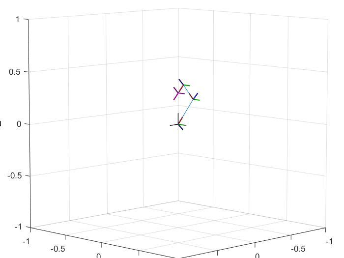

Contents
Define robot constant parameters
ThreeLinkRobot.l1 = 0.3;
ThreeLinkRobot.l2 = 0.2;
ThreeLinkRobot.l3 = 0.1;
Create robot main structure
robot = robotics.RigidBodyTree()
robot =
RigidBodyTree with properties:
NumBodies: 0
Bodies: {}
Base: [1×1 robotics.FixedBase]
BodyNames: {}
BaseName: 'base'
Create joint and link 1
jnt1 = robotics.Joint('jnt1','revolute')
jnt1.PositionLimits = deg2rad([-180, 180]);
jnt1.setFixedTransform([eye(3),[0;0;0];[0 0 0 1]]);
jnt1.JointAxis = [0 1 0];
link1 = robotics.RigidBody('L1');
link1.Joint = jnt1;
robot.addBody(link1, 'base');
jnt1 =
Joint with properties:
Type: 'revolute'
Name: 'jnt1'
JointAxis: [0 0 1]
PositionLimits: [-3.1416 3.1416]
HomePosition: 0
JointToParentTransform: [4×4 double]
ChildToJointTransform: [4×4 double]
Create joint and link 2
jnt2 = robotics.Joint('jnt2','revolute');
jnt2.PositionLimits = deg2rad([0, 180]);
jnt2.setFixedTransform([eye(3),[ThreeLinkRobot.l1;0;0];[0 0 0 1]]);
jnt2.JointAxis = [0 1 0];
link2 = robotics.RigidBody('L2');
link2.Joint = jnt2;
robot.addBody(link2, 'L1');
Create joint and link 3
jnt3 = robotics.Joint('jnt3','revolute');
jnt3.PositionLimits = deg2rad([-130, 130]);
jnt3.setFixedTransform([eye(3),[ThreeLinkRobot.l2;0;0];[0 0 0 1]]);
jnt3.JointAxis = [0 1 0];
link3 = robotics.RigidBody('L3');
link3.Joint = jnt3;
robot.addBody(link3, 'L2');
Create joint and link 4 (end effector)
jnt4 = robotics.Joint('jnt4','fixed');
jnt4.setFixedTransform([eye(3),[ThreeLinkRobot.l3;0;0];[0 0 0 1]]);
link4 = robotics.RigidBody('L4');
link4.Joint = jnt4;
robot.addBody(link4, 'L3');
Show details of kinematic chain
showdetails(robot);
--------------------
Robot: (4 bodies)
Idx Body Name Joint Name Joint Type Parent Name(Idx) Children Name(s)
--- --------- ---------- ---------- ---------------- ----------------
1 L1 jnt1 revolute base(0) L2(2)
2 L2 jnt2 revolute L1(1) L3(3)
3 L3 jnt3 revolute L2(2) L4(4)
4 L4 jnt4 fixed L3(3)
--------------------
Show figure of robot in its home configuration
Qhome = robot.homeConfiguration
qHome = [Qhome.JointPosition]
show(robot, Qhome);
Qhome =
1×3 struct array with fields:
JointName
JointPosition
qHome =
0 0 0

Calculate Forward Kinematics
Q = robot.randomConfiguration();
q = [Q.JointPosition]
show(robot, Q);
T = getTransform(robot, Q, 'L4')
J = geometricJacobian(robot, Q, 'L4')
q =
-2.7093 1.0041 0.1401
T =
0.0056 0 -1.0000 -0.2986
0 1.0000 0 0
1.0000 0 0.0056 0.4239
0 0 0 1.0000
J =
0 0 0
1.0000 1.0000 1.0000
0 0 0
0.4239 0.2982 0.1000
0 0 0
0.2986 0.0262 -0.0006

Configure Inverse Kinematics
ik = robotics.InverseKinematics('RigidBodyTree', robot);
weights = [1 1 1 1 1 1];
ikInitialGuess = robot.homeConfiguration;
q = [ pi/2 pi/2 pi/2];
ikInitialGuess = arrayfun(@(x,y) setfield(x, 'JointPosition', y), ikInitialGuess, q);
Tee = eul2tform([0 pi/4 0]);
Tee(1:3,4) = [0 0 0.5*(ThreeLinkRobot.l1+ThreeLinkRobot.l2+ThreeLinkRobot.l3)];
Solve Inverse Kinematics
[QSol, SolInfo] = step(ik, 'L4', Tee, weights, ikInitialGuess);
show(robot, QSol);
qSol = [QSol.JointPosition]'
Tik = getTransform(robot, QSol, 'L4')
qSol =
-2.3145
1.4671
1.6328
Tik =
0.7071 0 0.7071 -0.0000
0 1.0000 0 0
-0.7071 0 0.7071 0.3000
0 0 0 1.0000
